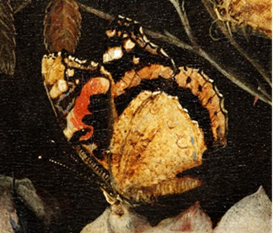
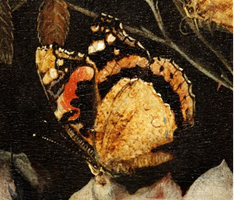
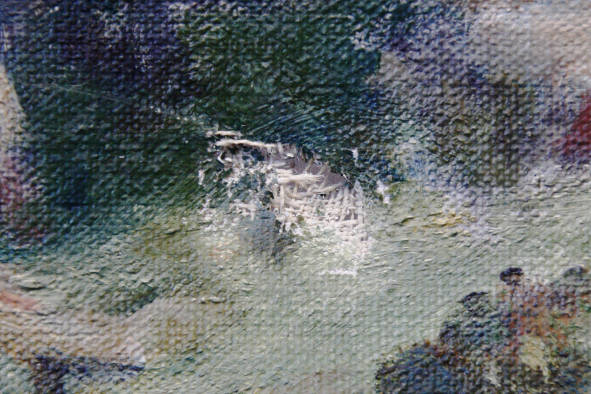
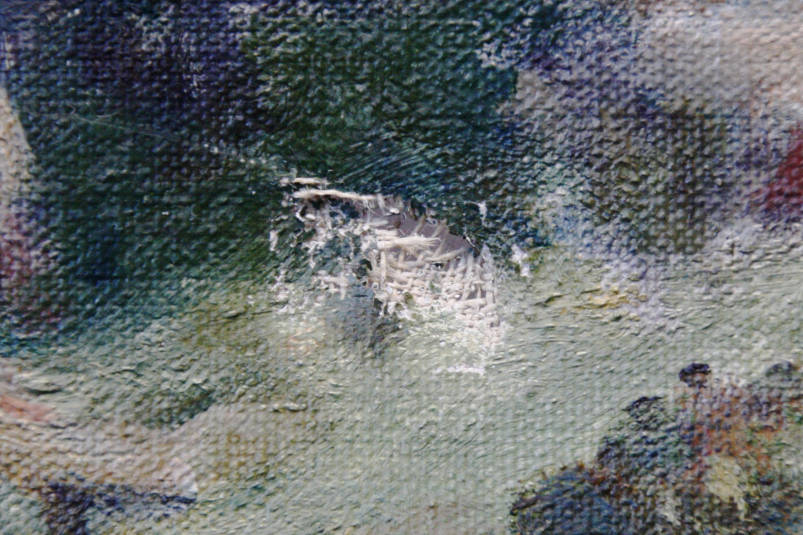
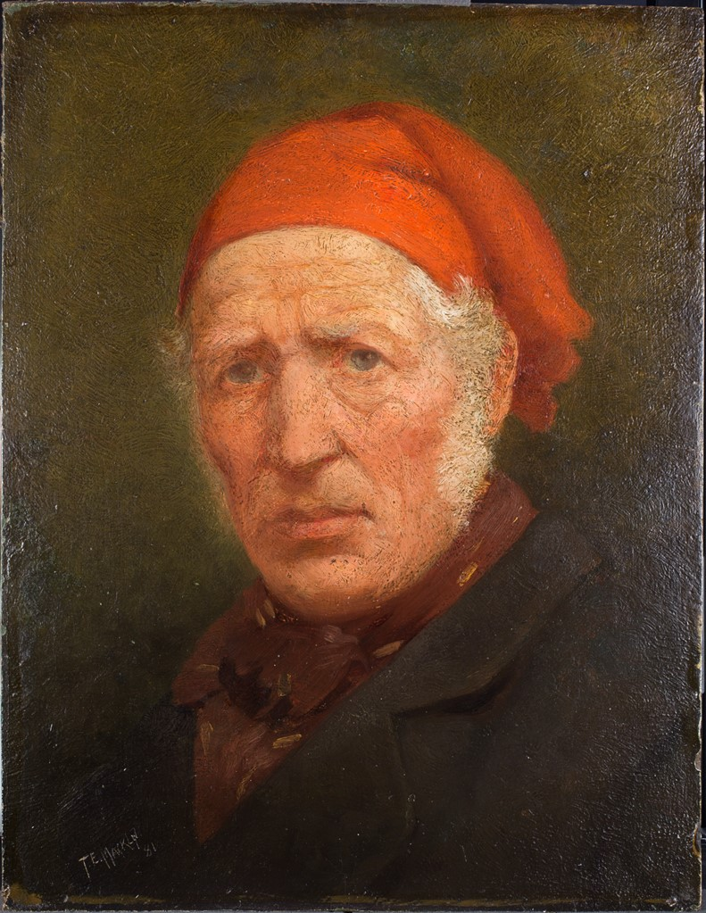
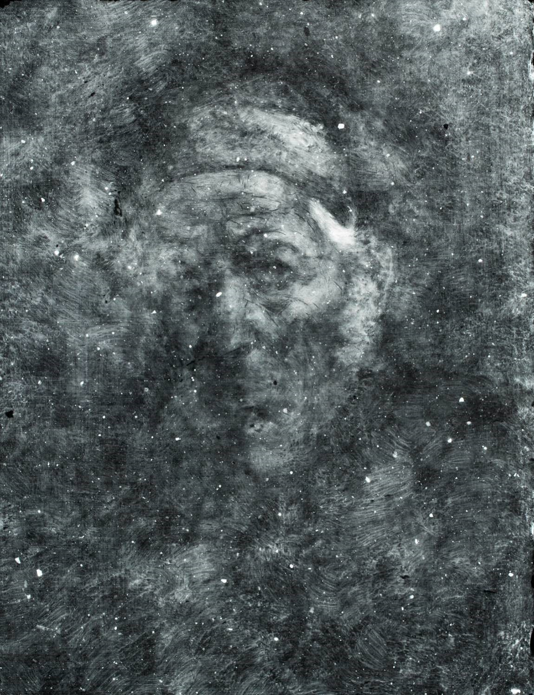
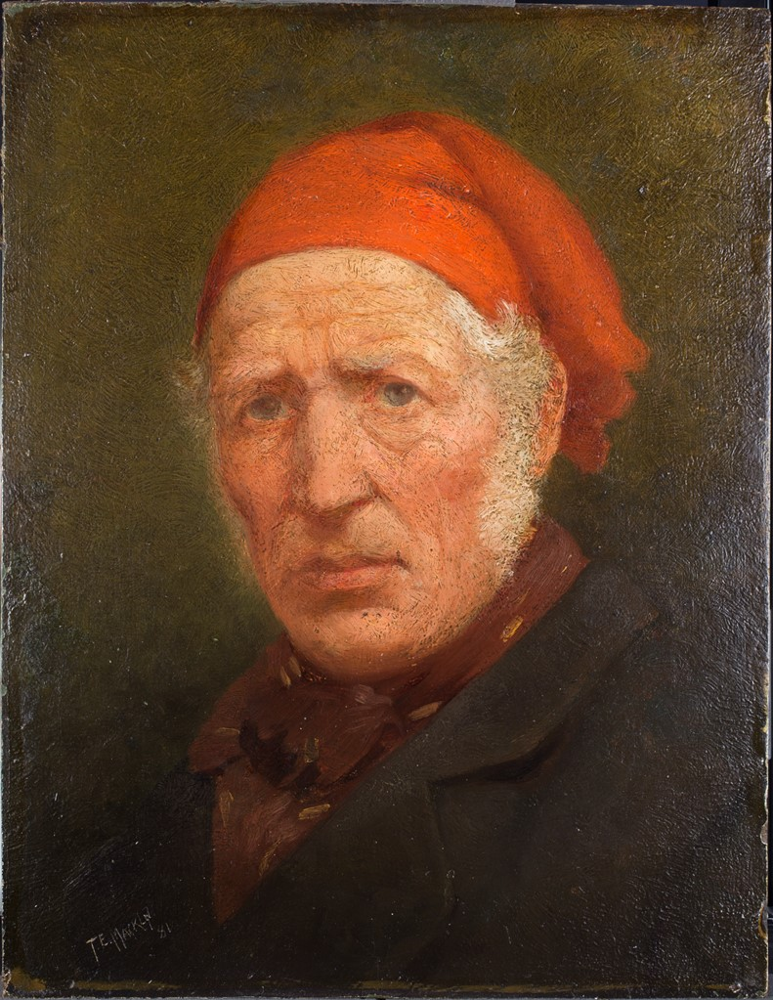
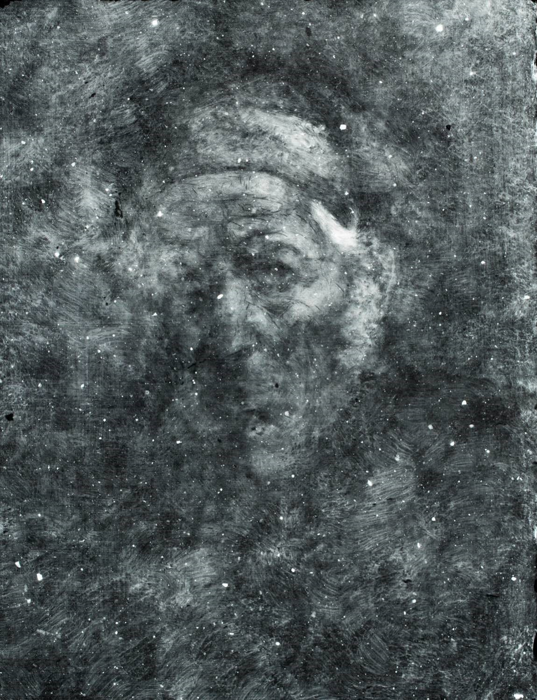
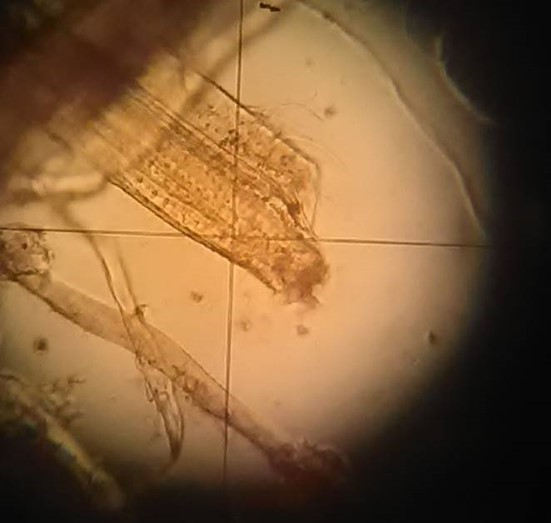
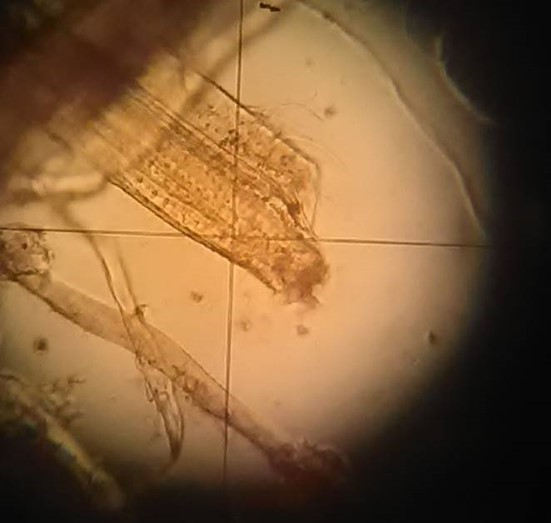

Treatment
/01/
Flowers, Insects and Reptiles
Otto Marseus van Schrieck, 1673, 70.0 x 53.4 cm
This painting, from a public collection, was structurally stable, however the varnish was heavily deteriorated and discoloured causing significant aesthetic impairment, and so treatment focussed on the removal of multiple layers of aged varnish. The butterflies depicted were real specimens, so cleaning needed to account for the butterfly scales sitting on the paint layer which were vulnerable to damage and loss. A resin soap gel allowed the varnish to be removed in layers, stopping above the level of the butterfly scales. Treatment allowed for technical analysis and documentation of this unusual practice, culminating in a published article.
Otto Marseus van Schrieck (c. 1620-1678) had close ties with the seventeenth-century culture of natural sciences, and his works depict an intensive study of flora and fauna spanning his career. He developed a distinctive genre of painting, the forest floor still-life, or sottobosco, characterised by a dark, undergrowth setting teeming with reptiles and amphibia, toads and snakes, butterflies and moths. In his home near Amsterdam he bred and kept many of the animals he used as models in his paintings.
 



/02/
Arthog, looking towards Fairbourne
F. Ward Lever, 1956, 46.2 x 61.3 cm
This painting had suffered an impact, tearing a hole in the canvas support and with losses to the paint.
The tear was mended by reweaving and reattaching single threads using water-based natural adhesives. The ground was filled with a chalk putty, and the paint retouched using watercolour and an aldehyde resin to match the colour and gloss of the surrounding areas.
 


/03/
Venice: A Regatta on the Grand Canal
Studio of Canaletto, c. 1741 - 1760, 60.0 x 94.1 cm
Treatment of this oil on canvas painting was part of a larger project in conserving the collection of paintings by Canaletto and his studio held in The Wallace Collection in London. This painting depicts one of the races for single oared gondolas, which takes place during the annual carnival, held on the 2nd February: the feast day of the Purification of the Virgin.
The canvas had been lined in the middle of the 19th century was structurally in a good condition. The surface of the painting displayed signs of previous abrasive cleaning. After removal of the yellowed discoloured varnish, a secondary greyish layer was observed, which was insoluble in free solvents, and partially soluble in a mild chelator. The removal of this material was achieved by employing the Modular Cleaning Programme to develop a suitable solution. Overpaint proved soluble in benzyl alcohol. An isolating varnish was applied by brush before visual reintegration was carried out using Gamblin Conservation paints, then the painting was given a final spray varnish.

/04/
Self Portrait - 1881 The Son of a Sunderland Ship Builder
T. E. Macklin (attributed), 1881, 70.5 x 60.0 cm
An oil painting on millboard; the brief required minimal intervention, so the aim of treatment was to stabilise the structure and paint, improve the overall appearance of the painting and to improve the existing framing
The reverse of the painting was cleaned using dry methods, and the front was surface cleaned using saliva followed by a mild chelator in solution. Since varnish cleaning was not included in the brief, visible abrasions to the paint layer concealed with retouching over the existing varnish. Inpainting was carried out using a hydrocarbon resin, followed by an acrylic copolymer. The combination of retouching resins matched the surface gloss and saturation of the original. A spray varnish was applied to counter a large unsightly scuff on the existing varnish. The perimeter of the support required stabilising, as the fibrous board was expanding and fraying which resulted in loss of ground and paint. The exposed edges were consolidated with an acrylic copolymer. The frame was retouched using proprietary acrylic paint and then varnished. The painting was reframed with a new backing board.
The support was analysed. A cross-section was made of the paint and support, and fibre analysis was conducted on the board to examine the fibre types used to manufacture the millboard.
 



 

Writing
/05/
Paint...and butterflies?
Conserving and Researching a painting by Otto Marseus van Schrieck
April 2020
Article on the Hamilton Kerr Institute student and intern blog.
/06/
Anne Elizabeth Cholmley
Gainsborough Dupont, c. 1788, 15.1 x 12.2 cm
June 2018
Extended reserch project for Master's Degree qualification
Technical examination of a miniature painting, oil on rigid panel, discussed in context of pulp-based supports for oil painting.
Within paintings conservation, paper-boards for oil painting have received far less attention compared to the extensive research on canvas and wood panel supports. This investigation focussed on a case study examining a painting, Anne Elizabeth Cholmley Later Lady Mulgrave by Gainsborough Dupont with the aim of providing technical knowledge of the materials in the support.
Painters were historically known to use paper-based supports for oil painting and pulpboard used for miniature painting was amongst the earliest used in the 16th century. Sporadic references to paper and boards for oil supports appear in technical literature in the 17th and 18th centuries. The development and subsequent popularity of plein-air sketching spurred the use of paper-boards, supplied by colourmen from the end of the 18th century onwards.
The findings from the examination identified the support as a papier-mâché board, likely a bookboard. Other works on the same support by the artist and Thomas Gainsborough are proposed. An attempt was made to investigate the technology and development of the papier-mâché trade to place this material in context. So far finding similar examples from other painters has been unsatisfactory. There appears to be a gap in the knowledge with regards to conserving papier-mâché used in paintings, however the possibility of paper degradation by oxidation and oil are discussed.